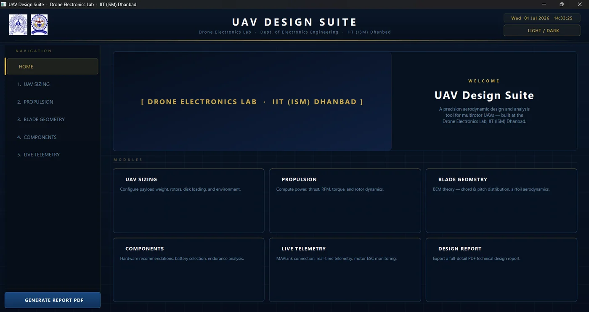
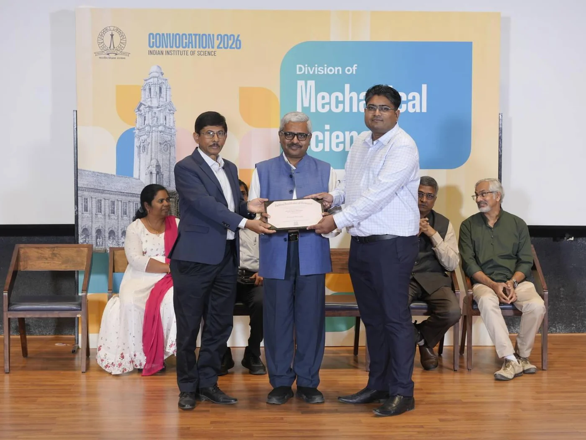
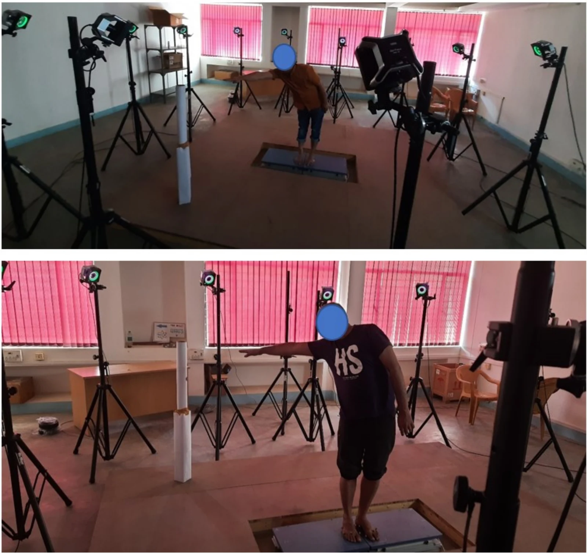
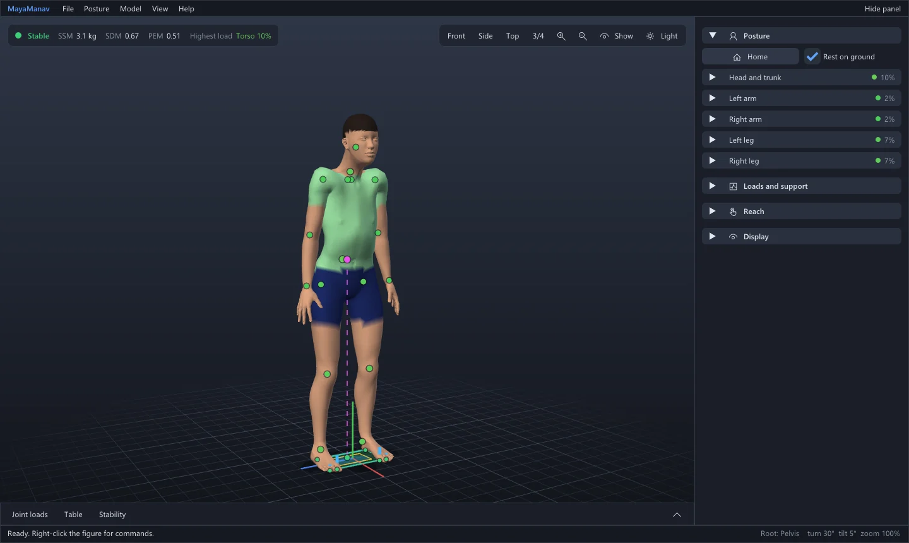

UAV programme leadership
Leading a national drone capacity-building programme: roadmap, R&D team, academic courses, defence training and new funding.
UAV projects →I lead teams that turn engineering ideas into working systems: today a national drone programme at IIT (ISM) Dhanbad, and earlier power plant operations and large-scale fabrication projects.
Fifteen years across Larsen & Toubro, a SAIL–DVC power utility, the Indian Institute of Science, and IIT (ISM). PhD in computational ergonomics from IISc.




Leading a national drone capacity-building programme: roadmap, R&D team, academic courses, defence training and new funding.
UAV projects →Digital human models that predict how people balance, move and tire, used to design safer, less tiring workplaces.
Research →Seven years running a power plant and planning heavy fabrication: high availability, crisis response and cost control.
Experience →Appointed to lead IIT (ISM)'s drone programme five months after joining.
Thesis: Unified Effort Measure for Natural Posturing of Digital Humans, supervised by Prof. Dibakar Sen.
Gesture-controlled drone flown, hybrid VTOL airframe designed, custom flight controller and propulsion design tool built.
Open to roles in R&D leadership, technical programme management, UAV systems and computational ergonomics.